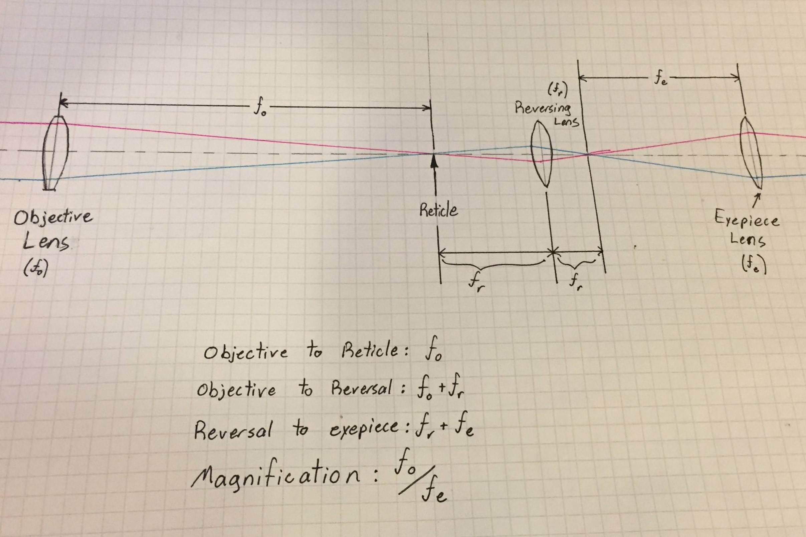

Antique Scope
Spring 2017
Building a riflescope with old-school looks
I wanted a scope to mount to my Henry lever-action rifle, but I wanted something that would look cool and complement the style of the rifle. Putting a modern scope on a gun with a 150 year old design would be jarring and disharmonious. I needed a period-correct scope. Scopes did exist in that era, although they were very rare. Generally, they were very long and narrow, more like an old telescope. So I set out to design a scope that would look right and have basic functionality. This meant polishing my skills with optics and lenses. I didn't care about correcting for abberations, so I designed the simplest scope I could. The resulting design had three lenses. The Objective lens collects light from the target area, and focuses it. This lens has a relatively long focal length, which contributes to the long overall length of the scope. There is also the ocular lens, which is the lens closes to the eye. It has a focal length of one third that of the objective, which gives the scope a fixed 3x magnification. This lens creates the magnification effect and positions the light such that it can enter the shooters eye at an acceptable angle (this sets the eye relief). Between the two lenses is one more lens, which can have any focal length (but longer focal lengths will minimize abberation). This is the reversal lens. Without it, the scope would work fine, but the image would be upside-down and backwards. The reversal lens flips the image rightside up again. This lens array creates two focal planes within the scope. At one of those focal planes sits the reticle. The reticle is a very very small device that will occlude some light, making the occluded areas appear black. To make crosshairs, two literal hairs could be strung within the tube to block light. I decided to go with a simpler post-style reticle, so I had a tiny dowel rod positioned within the tube and carefully stoned to a sharp, needle-like point. The dowel was mounted on a brass carrier that was threaded into the tube with very fine threads. By adjusting the position of the reticle carrier, the focus of the reticle could be adjusted.

A very not-to-scale drawing of the light path through the scope.
The reticle in its carrier. It, and most of the inside of the scope, is painted with flat black paint to minimize internal reflections.
Once the design was finished, I only had to machine aluminum tubes that would hold all the lenses where they needed to be. Because the scope was not intended to be adjustable, this was a fairly simple process. The scope was made from two tubes, one slightly larger than the other, with brass fittings to connect them all. The lenses at each end were sealed with an O-ring to try to keep the scope at least mostly sealed. Good scopes are hermetically sealed and filled with dry nitrogen to prevent fogging, but I settled for some O-rings and tried to assemble the scope on a dry day to minimize water vapor in the scope. Then I had to deal with adjusting the scope. Optical adjustments are the norm on modern scopes, but that's very hard to do, so instead I did what was actually done in the era; just literally cant the whole scope tube. I designed a rigid front scope ring, but then made an oversized rear ring with springs and adjustment screws that would allow the shooter to subtly bend the scope relative to the barrel axis, and in this way could sight the gun in. Windage could be adusted by drifting the dovetail of the front ring. This system was first bore-sighted, and then finish sighted at 100 yards. The resulting group was about the same as the group I had got with iron sights, which I thought was good enough for a homemade scope.
The scope in it's mount, with the rear tube disconnected. The brass fitting in the center of the rear tube holds the reversing lens.
The sight picture was not great, definitely a far cry from modern scopes, but it was just enough to let you see what you were looking at. The focus was permanantly set by the scope at infinity, so the picture gets blurry at short range. Chromatic abberations are definitely notable, and spherical abberations make the fringes of the image distorted. The reticle is pretty clear and sharp, and lets you get a fairly decent aim. Eye relief is one of the biggest issues. Because of the very small diameter lenses, this scope has the critical eye relief of a typical 9x scope, despite being only 3x. By any normal standard, this scope is absolutely horrible, but I still view this as a success since it still maintains acceptable function and it does work; I can hit my targets without trouble. It looks great too. The mount is aluminum that was painted a mottled black, while the tube was left with a brushed finish and the brass polished a bit.
The view through the scope. Unfortunately there is no target in the picture right now, just some plants. Chromatic abberations are still easy to see.